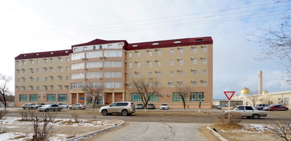
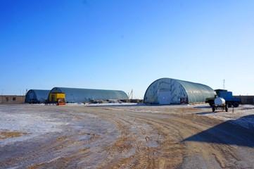
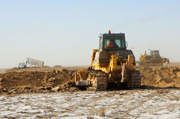

transform rotate(*deg) / scaleX(*) / scaleY(*) / scale (x , y) / scaleX(-1)[зеркальное отражение содержимого] / skewX(*deg) / / skewY(*deg) / skew(x , y) / translate(*px) [движение по осям X и Y], transform-origin: x y z [задает точку, относительно которой происходит трансформация], matrix() [матрица преобразований]. Несколько свойств прописываются через пробел!


